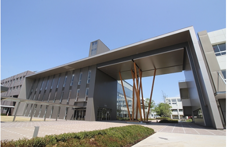

～経営学部 経営情報学科～
ここは大垣市の私立大学、”岐阜協立大学”。
ここではいろいろなことを学び、ゆかいな仲間たちと巡り合うことができる夢のような大学。
今日はその一部である、”経営学部 経営情報学科”を少しだけのぞいてみましょう。
あなたのお目にかかる出会いがあればぜひホームページをチェックしてみてくださいね！

↓↓↓経営情報学科について軽く説明↓↓↓
情報経営学科は、経営学と情報技術の融合を目指し、学生に幅広い知識とスキルを提供します。プログラミングや、データから読み取り考察するなど、
インターネットの分野を幅広く学べることができる学科となっております。ここでしか学べないことをたくさん学び、ここでしか作れない思い出をいっぱい作ってくださいね♪
～コース～
- 経営戦略
- 情報システム
- マーケティング
- データ分析
↓あとはあなた次第↓♡